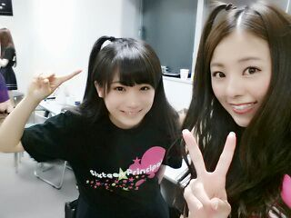
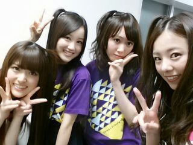

| 2014/06 12 Thu | 〜映像公演〜 だるま回り Rotty♪♪♪ |
皆さん、おつかれさまで〜す*^^*

ろってぃ−だよ。
プリンシパル3幕で 皆でちょんま毛したよ〜
真夏に産まれたまなつとろってぃ−..*

なにわで育ったさゆりんとろってぃ−..*
ぁ... ななせいない...
朝起きたら 夜中にななせまるから面白い写真が送られてきてて朝から笑った^^
毎日 プリンシパルが始まる前に
渋谷でやっていた２年前のプリンシパル公演を映像化した、映像公演をやっています//
私・ゆうり・まりかで
三日目の映像公演を見に行きました.
なんかな〜 色々思い出しました..*
本当、2年前の自分達をよしよししてあげたい(i_i)＼(^_^)
でも、この2年で強くなったな〜と思いました^^
ちなみに私は、愛犬に向けて作った歌を歌っていました..*
今日の映像公演で生駒ちゃんが、ろってぃ−の曲 10thのカップリング曲にいれようよ!!! って言ってくれていたみたいです. 嬉しゅうキモチ♪
そして、まひろが参加した映像公演の日
初めてちゃんとMC役をしたのですが
スタッフさんに、トーク内容もトーク尺もばっちり☆
って褒めてもらえて 嬉しゅうキモチになりました〜(。^。^。)笑
本日 ２回目の嬉しゅうキモチ♪
皆ちょんまげ..*
さゆりん・みなみ・らりん・ろってぃ−

そしてそして、)))))
乃木坂って、どこ？で鉄棒をやりました！
『 前方抱え込み前回り 』
あの回り方『 だるま。』って子供の頃からろってぃ−は言ってました！
だるま隊長だけにね、、、笑ぁ
鉄棒と ハードルは得意だよ〜..*
棒系 得意なのかな ？？
ではではっ、また更新します

のし。ちーずーじょーメロまに。
コメント(234)
2014/06/12 20:36